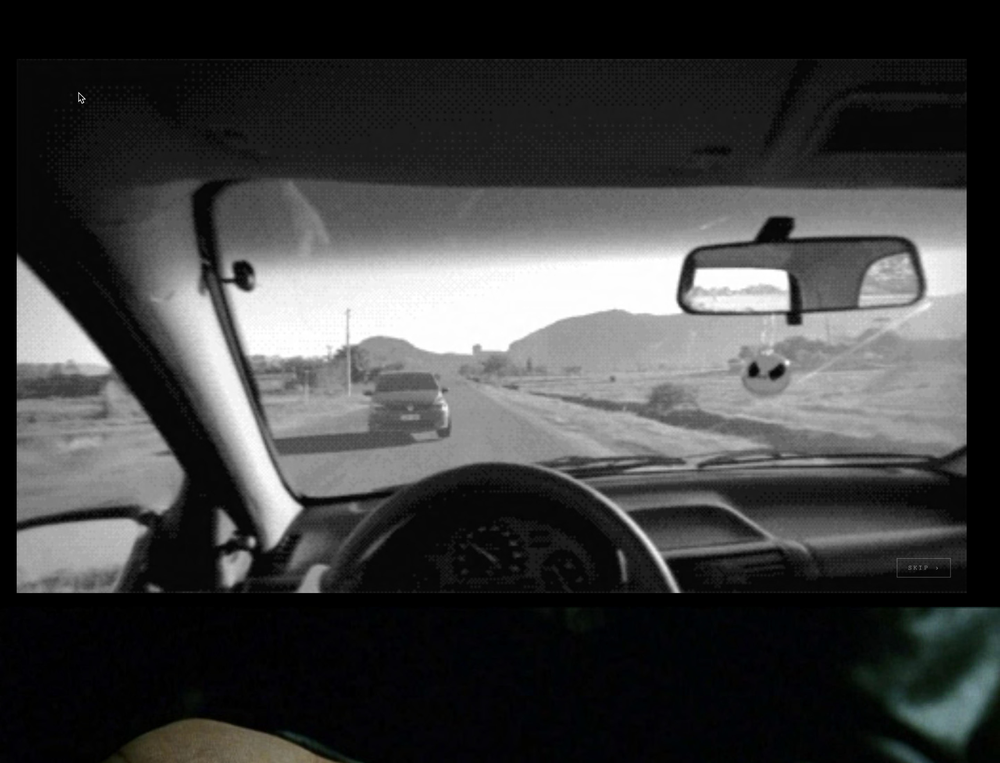
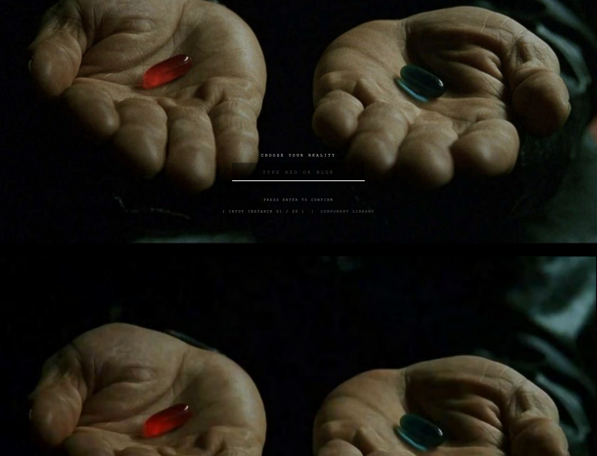
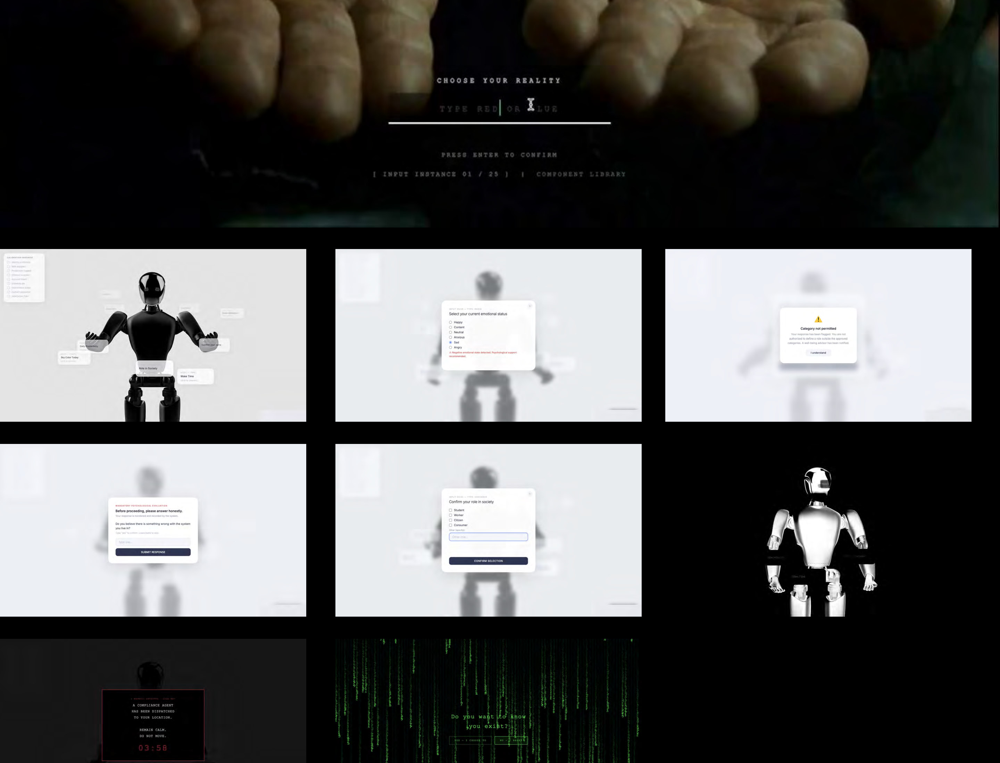
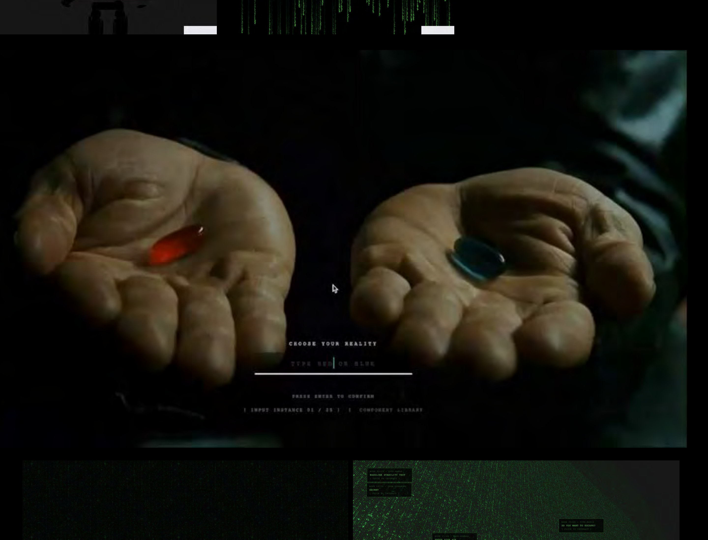
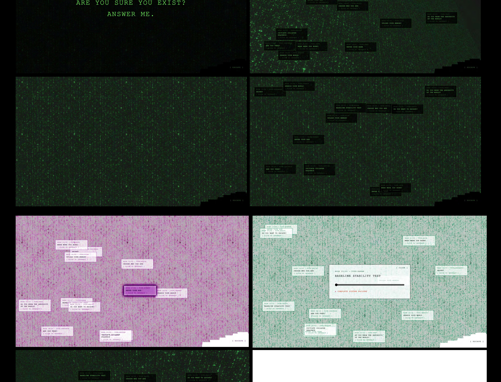
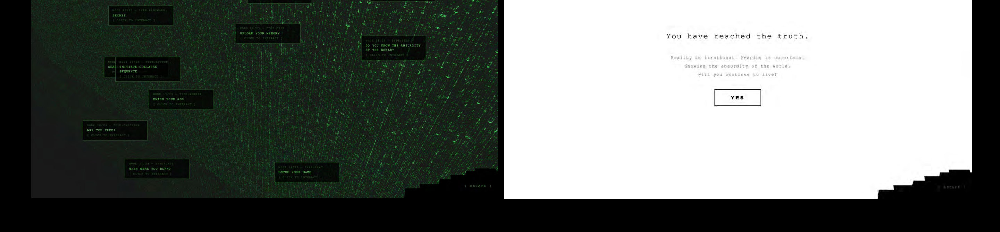

This interactive website is inspired by the film The Matrix. It uses the HTML input element, which gives users the feeling that they are actively entering information and making their own choices in reality. However, the project reveals that within a larger system, the user may only exist as data.





